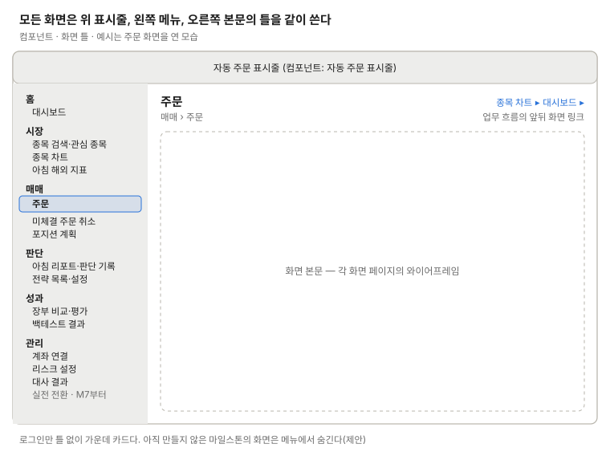

화면 틀
로그인을 뺀 모든 화면은 위에 자동 주문 표시줄, 왼쪽에 메뉴, 오른쪽에 화면 제목과 본문을 둔다. 메뉴 묶음은 개요의 정보 구조를 따른다.

- 현재 화면은 메뉴에서 강조한다
- 제목 줄 오른쪽에 업무 흐름의 앞뒤 화면으로 가는 링크를 둔다
- 쓰는 화면: 로그인을 뺀 17개
로그인을 뺀 모든 화면은 위에 자동 주문 표시줄, 왼쪽에 메뉴, 오른쪽에 화면 제목과 본문을 둔다. 메뉴 묶음은 개요의 정보 구조를 따른다.
